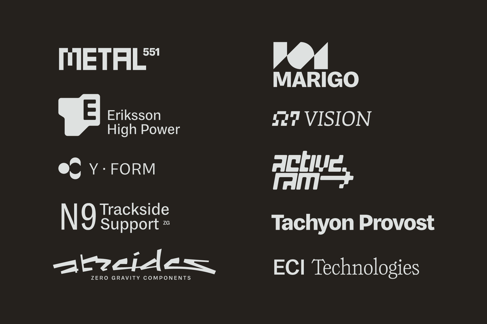
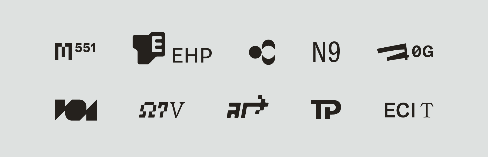

Logos for sci-fi corporations (2020)
Logotypes & marks set in my own typefaces — mostly MD System, also MD Eight, Greymarch. No client, just warm-up sketches. Inspired by the work of Bao T Nguyen and TDR.


Logotypes & marks set in my own typefaces — mostly MD System, also MD Eight, Greymarch. No client, just warm-up sketches. Inspired by the work of Bao T Nguyen and TDR.

